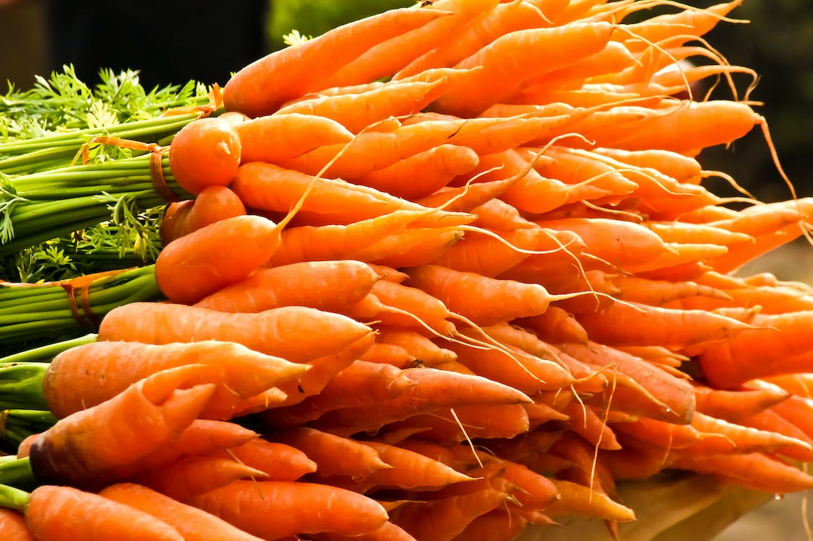
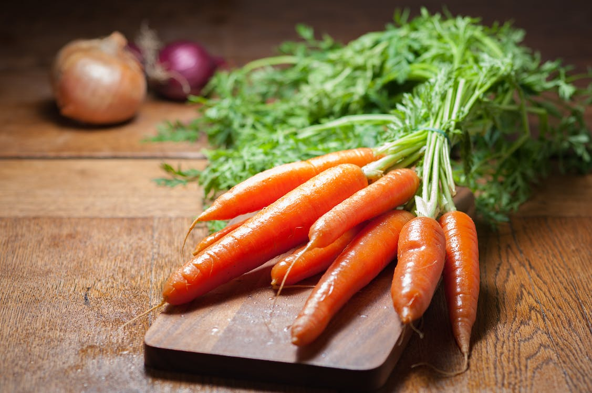
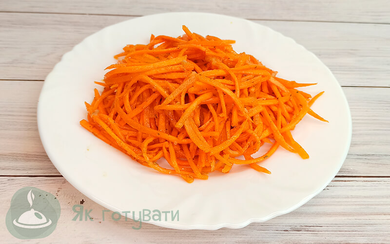

З моркви можна приготувати:
- Салат з корейської моркви
- Хот-дог
- Моркв'яні кекси
Морква по-корейськи
морква - 7-8 шт середнього розміру; цукор - 2 ч. л; сіль - 1 ч. л; ріпчаста цибуля - 1 шт; рослинна олія - 100 гр; столовий оцет - 3 ст. л; приправа для моркви по-корейськи.
Хот-дог
Класичний рецепт хот-дога вкрай простий: для нього треба підсмажити довгу булочку і сосиску, вкласти другу в першу і полити все кетчупом.
Морквяні кекси
Класичний рецепт хот-дога вкрай простий: для нього треба підсмажити довгу булочку і сосиску, вкласти другу в першу і полити все кетчупом.
